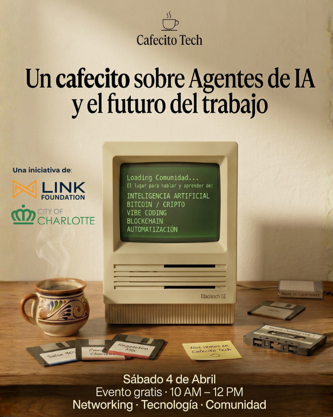

Cafecito Tech #2 — Agentes de IA y el Futuro del Trabajo
Acerca del Evento
¿La IA va a cambiar tu trabajo? Hablemos.
Acompáñanos el sábado 4 de abril a un espacio creado para latinos curiosos por la tecnología, la inteligencia artificial y el futuro. Un cafecito entre amigos para aprender, conectar y hacer comunidad.
Sesión #2: Agentes de IA y el Futuro del Trabajo
¿Qué son los agentes de IA? ¿Cómo van a cambiar la forma en que trabajamos? ¿Qué oportunidades abren y qué desafíos presentan?
Vamos a explorar cómo los agentes de IA están transformando el trabajo — y cómo TÚ puedes ser parte activa de ese cambio, no solo espectador.
Al finalizar el evento, habrás aprendido:
- Qué es un agente de IA y cómo funciona (sin tecnicismos)
- Cómo los agentes están cambiando industrias y trabajos hoy
- Qué oportunidades existen para ti, tu carrera o tu negocio
- Cómo empezar a pensar en usar agentes a tu favor
En esta sesión habrá:
- 🗣️ Conversaciones en mesas redondas con preguntas provocativas
- 🎤 Panel: Ingeniero de Microsoft y emprendedor de marketing digital comparten cómo han integrado agentes de IA en su trabajo
- ❓ Espacio para tus preguntas y reflexiones
Los Panelistas
Tendremos:
- ☕ Café y appetizers
- 🤝 Networking con la comunidad latina tech de Charlotte
- 💬 Conversaciones entre amigos
- 🎟️ Entrada gratis · Cupos limitados para mantenerlo íntimo y conversable
- 🚗 Parking gratis adelante y atrás del edificio
Ven a tomarte un cafecito, explorar el futuro del trabajo y conectar con otros latinos con intereses similares.
Vas a llegar con preguntas. Vas a salir con un plan.
🎟️ Reserva tu entrada
Gratis · Cupos limitados · 4 de Abril 2026